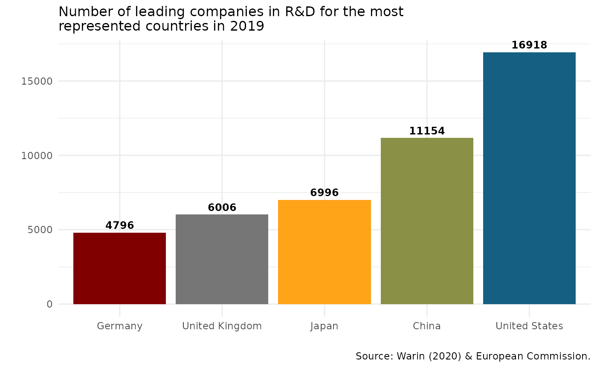

vignette.RmdThe IRI Scoreboard for data on innovation, managed by the European Commission, lists Research and Development investments made by the world’s 1,000 top investor companies.This scientific project carried out within the Directorate B: Growth and Innovation, one of the seven scientific institutes of the European Commission’s Joint Research Centre (JRC).
The IRI aims at providing robust data and analysis on the contribution of private-sector R&D to sustainable competitiveness and “prosperity” in the EU. With iriR, we want to make easily available the IRI’s data and modestly help the European Commission in achieving its goals, such as open the data to EU policy-makers, academia, and other institutional and economic actors.
Through our R package, people can see the six parameters that composed the global IRI’data on R&D : Country, Year, Company’s name, Industry, Indicator and Compaany’s rank.
To learn more about IRI and follow the work of the European Comission, please visit this page. To see a definition of the indicators, please visit this page. See below to have access through iriR to the whole list of indicators,industries, companies and countries.
You can install the current development version of ‘iriR’ with:
devtools::install_github("warint/iriR")A user needs to enter the ISO code of a country. To have access to this code, the following function provides this information.
irir_country() # A list of all countries will be produced
irir_country(country = "Canada") # The ISO code for Canada will be produced
irir_country("Canada") # The ISO code for Canada will be producedA user needs to enter the code of the desired indicator. To do so, the following function provides access to all the indicators of interest.
irir_indicator() # A list of all indicators will be produced
irir_indicator(indicators = "sales") # A list with all the variables including "sales" will be produced
irir_indicator("sales") # A list with all the variables including "sales" will be producedA user needs to enter the name of the desired company. To do so, the following function provides access to all the companies of interest.
irir_company() # A list of all companies will be produced
irir_company(company = "Samsung") # A list with all the variables including "Samsung" will be produced
irir_company("Samsung") # A list with all the variables including "Samsung" will be producedA user needs to enter the name of the desired industry. To do so, the following function provides access to all the industries of interest.
irir_industry() # A list of all companies will be produced
irir_industry(industry = "Automobile") # A list with all the variables including "Automobile" will be produced
irir_industry("Automobile")# A list with all the variables including "Automobile" will be producedOnce the user knows all the arguments, s.he can collect the data in a very easy way through this function:
irir_data(country = "USA", years = "2018", indicators = "RD.euro", company = "FORD MOTOR", industry = "Automobiles & Parts", rank = 14) # It generates a data frame of the overall IRI data for American company "FORD MOTOR" in 2018.
irir_data(country=c("USA", "FRA"), years="2018",) # It generates a data frame of all the companies data from all the industries for the USA and France in 2018.
irir_data(years = "2018") # It generates a data frame of all the companies data for from all the industries for all the countries in 2018.
irir_data() # It generates a data frame of the complete datasetirir_visual fonction allows to create three type of visuals from the IRI Scoreboard for data on innovation : barcharts, linecharts and pointcharts.
By default, graphs will illustrate top 5 countries and Canada.
However, users can modify the graphs as they wish with these arguments :
Country
From the ISO codes provided by the irir_country() function, users can can choice which country they want to add to the top 5 or make it appear.
If there is no country code but an empty argument, only top 5 will appear.
Chart
Years
Country set to Canada by default. If there is no country code but an empty argument, only top 5 will appear as below.
irir_visual(country = "" ,chart = "bar_1")
If the argument “country” is missing, Canada will be included by default
irir_visual(chart = "bar_1")However, you can choose the country of your choice to be included.
irir_visual(country = "FRA", chart = "bar_1")The same logic applies for the two other bar charts
irir_visual(chart = "bar_2")
irir_visual(chart = "bar_3")
irir_visual(chart = "line_1")
irir_visual(country= "IND", chart = "line_2")
irir_visual( chart = "line_3")
irir_visual( chart = "line_4")
irir_visual( chart = "line_5")
irir_visual( chart = "line_6")
irir_visual( chart = "point_1")